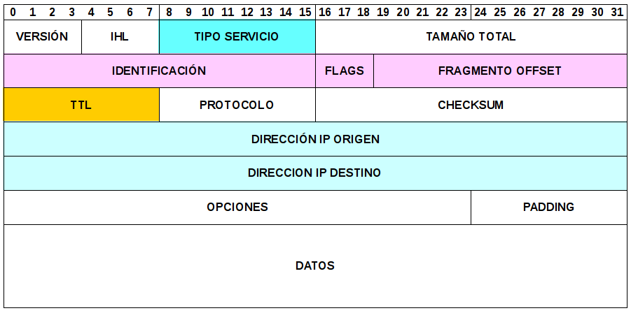

Protocolo IP¶
Introducción¶
El protocolo IP ofrece los mecanismos necesarios para transportar datagramas por una red.
IP es un protocolo de “lo mejor que se pueda”, por lo que no garantiza que este llegue a destino, trata a cada datagrama como una entidad independiente y no proporciona mecanismos para aumentar la fiabilidad, control de flujo ni secuenciamiento.
Las tablas de encaminamiento IP son tan simples, porque IP no necesita conocer la ruta completa que seguirá hasta el destino, sólo necesita conocer cual es el siguiente salto y enviar allí el datagrama.
Características de IP¶
Generalmente, un cambio en la topología de la red puede hacer que los datagramas se reencaminen automáticamente, ya que las entradas en la tabla de encaminamiento, cambian en función de las condiciones de la red, esto, le da flexibilidad y robustez a IP. Un datagrama, debe caber en una trama, por lo que el datagrama depende del tamaño máximo de la trama, y se denomina “Unidad Máxima de Transmisión” (MTU).
Un host origen, no conoce los limites de tamaño con el que se va a encontrar, por lo que si un datagrama es demasiado grande para algún enlace intermedio, IP, divide el datagrama en varios datagramas menores llamados fragmentos y es responsabilidad del protocolo IP del siguiente dispositivo, reconstruir el datagrama original.
Mecanismos del protocolo IP¶
La cabecera de un datagrama IP está formada por 5 o mas palabras de 32 bits, el tamaño máximo es de 15 palabras (60 octetos).
Los campos mas importantes son los de IP origen, IP destino y protocolo, que permite que el datagrama se entregue al servicio correspondiente.
Si no hay opciones, el tamaño de la cabecera es de 20 octetos, si se incluye una o mas opciones, se puede necesitar rellenar la cabecera con ceros para que acabe en un múltiplo de palabras de 32 bits.
El campo Tamaño del datagrama mide el tamaño en octetos incluida cabecera y datos.
El campo Tipo de servicio, tiene 3 bits de precedencia, con las que se pueden obtener 8 niveles diferentes de precedencia y 4 bits para el tipo de servicio, que contiene la calidad del servicio, información que podría afectar a como se maneja un datagrama.
La mayoría de los routers, ignoran completamente el campo TOS, este campo, tendrá mayor protagonismo a futuro.
Cuando ocurre un cambio en la topología de red, algunos datagramas pueden estar circulando durante un período de tiempo, hasta que se elijan nuevas rutas. El campo Tiempo de vida, limita el tiempo que se permite a un datagrama permanecer en una red, cada router que maneja un datagrama, decrementa su valor en una unidad y cuando este valor lega a cero, el datagrama se descarta, informando al origen del descarte.
El valor por defecto para TTL es aproximadamente el doble del camino mas largo de la Internet, la longitud del camino más largo se llama diámetro.
El campo Suma de control se debe calcular en cada elemento donde el datagrama es procesado, ya que el campo TTL cambia en cada router.
Fragmentación¶
Los campos “Identificación, flags y desplazamiento” de fragemento, permiten que los datagramas se puedan fragmentar y reensamblar.
El primer paso, es comprobar si el flag “no fragmentar” está activado, en caso afirmativo y exista la necesidad de fragmentación, el datagrama será descartado, en caso negativo, los datos son divididos en trozos según la MTU del siguiente salto, cada trozo debe ser multiplo de 8 octetos.
Cada fragmento tendrá los mismos valores en los campos IP origen, IP destino, protocolo e identificación, sin embargo, hay asignar valores en los siguientes campos:
Tamaño del datagrama fragmentado
El flag mas fragmentos debe activarse en todos los fragmentos excepto el último
El campo desplazamiento del fragmento indica la posición del fragmento en relación con el principio del datagrama original. La posición inicial es 0.
Hay que calcular sumas de control diferentes para cada uno de los fragmentos
El campo identificación, permite al host destino, reconocer los fragmentos que pertenecen a un mismo datagrama.
Los datagramas fragmentados se reconstruyen en el host receptor, estos, pueden llegar desordenados. Cuando llega el primer fragmento, IP asigna memoria para el reensamblado del datagrama, pero el receptor no tiene forma de conocer el tamaño completo del datagrama hasta que llega el último fragmento. Aunque cada fabricante resuelve el problema, una implementación IP, debería ser capaz de manejar datagramas fragmentados cuyo tamaño total sea de un máximo del tamaño de la MTU de la interfaz por donde llegan.
El plazo de reensamblado tiene un valor recomendado entre 60 y 120 segundos, cuando expira este tiempo, el host receptor descarta los fragmentos y envía un mensaje de error al origen.